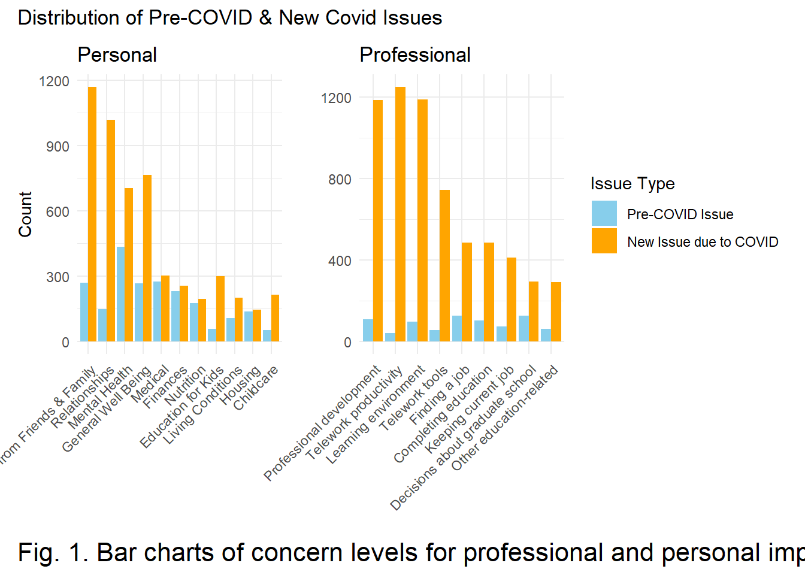
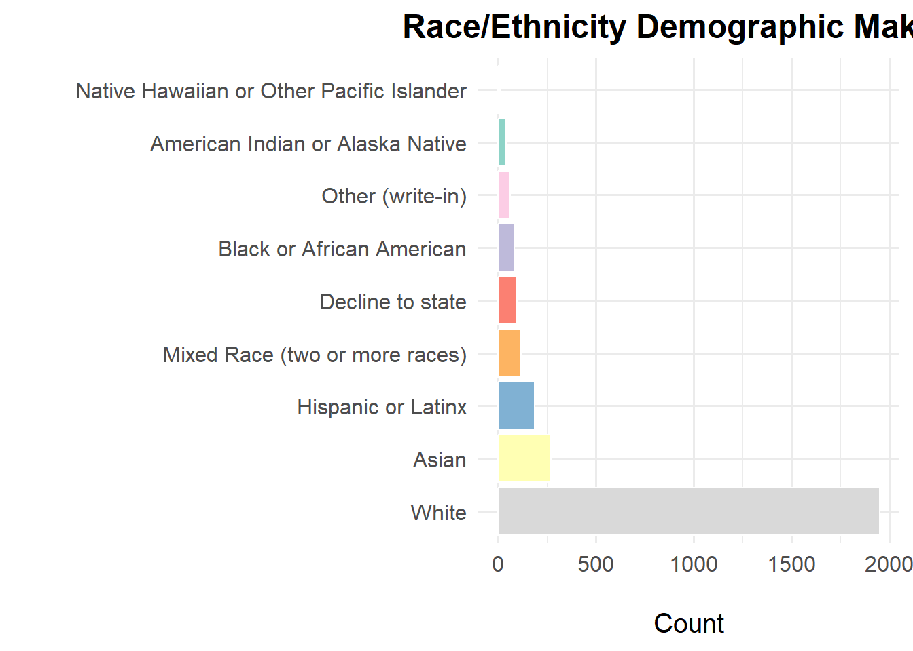
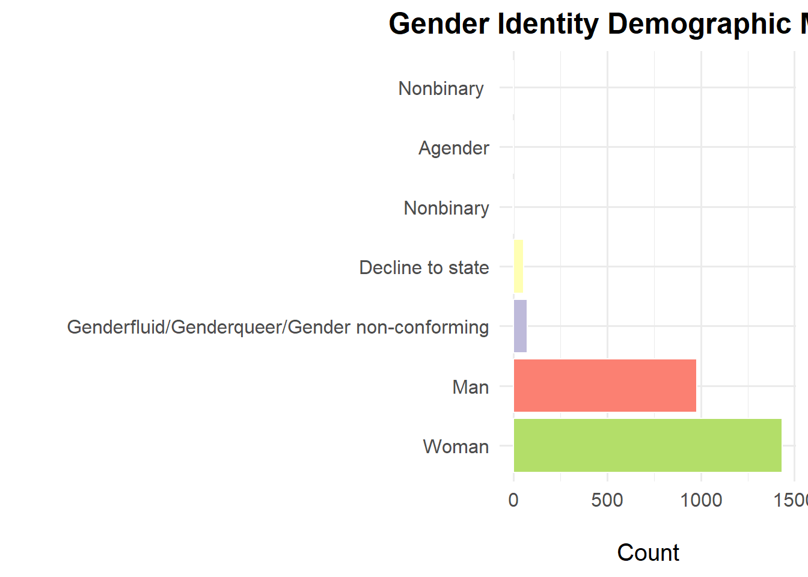
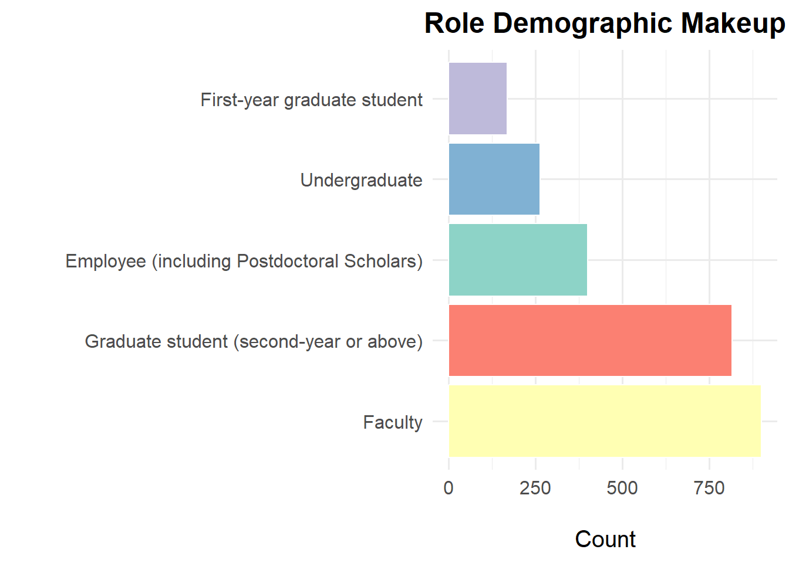
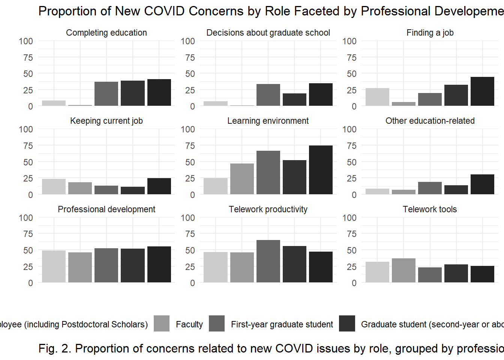
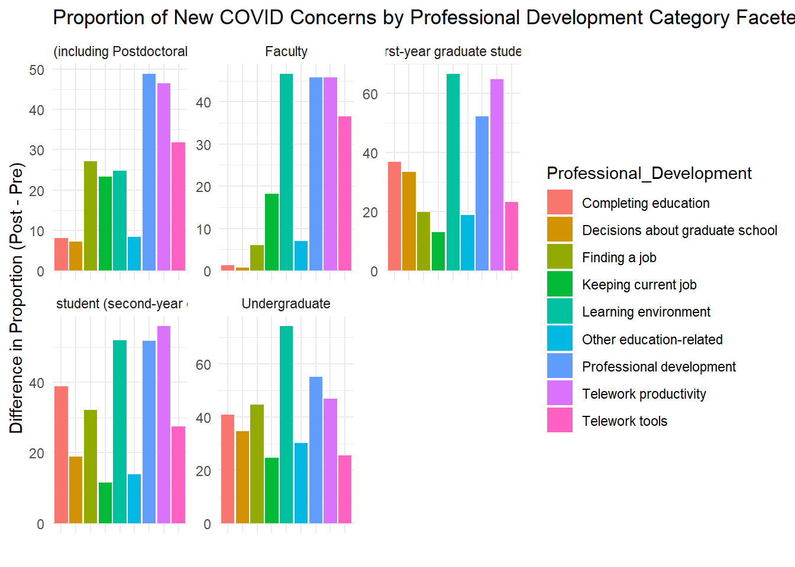
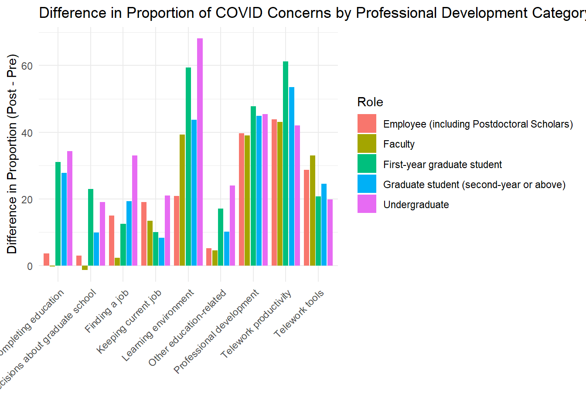
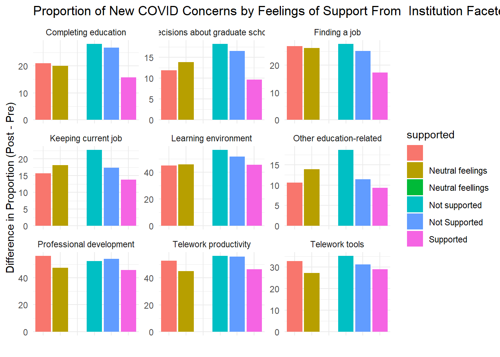
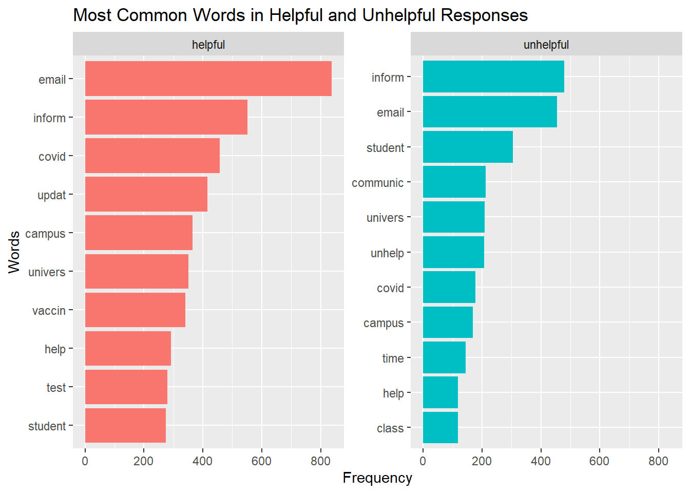

library(tidyverse)
library(tibble)
library(kableExtra)
library(tidytext)
library(stringr)
library(SnowballC)
library(patchwork)
data <- read.csv("data_all.csv", skip = 1)June 10-14 Activity
Play Around With Data
Some Major Takeaways Visualizations
personal_prefix <- "Currently..are.you.concerned.about.the.following....If.you.are.not..leave.blank...__________About......Personal.impacts..."
professional_prefix <- "Currently..are.you.concerned.about.the.following....If.you.are.not..leave.blank.....__________Abo......Academic.and.or.professional.impacts..."
remove_prefix <- function(column_name, prefix_to_remove) {
column_name <- gsub(prefix_to_remove, "", column_name)
return(column_name)
}
personal_concern_columns <- grep(personal_prefix, names(data), value = TRUE)
professional_concern_columns <- grep(professional_prefix, names(data), value = TRUE)
cleaned_personal_column_names <- lapply(personal_concern_columns, remove_prefix, prefix_to_remove = personal_prefix)
cleaned_professional_column_names <- lapply(professional_concern_columns, remove_prefix, prefix_to_remove = professional_prefix)
df_personal <- data[personal_concern_columns]
df_professional <- data[professional_concern_columns]
names(df_personal) <- cleaned_personal_column_names
names(df_professional) <- cleaned_professional_column_names# 0 - Not Concerned
# 1 - pre-covid issue
# 2 - new issue due to covid
# 3 - cannot access resources
head(df_personal) Food..nutrition Housing Health..medical Finances..paying.bills
1 0 0 0 0
2 2 2 0
3 0 0 0 0
4 0 0 0 0
5 0 0 0 0
6 0 0 2 0
General.well.being Mental.health Living.conditions
1 0 0 0
2 2 0 0
3 0 0 0
4 0 2 0
5 0 1 0
6 2 1 0
Distance.from.family..friends Relationships.with.others Childcare
1 0 0 0
2 2 2 0
3 0 0 0
4 2 2 0
5 1 1 0
6 1 2 0
Education.for.children
1 0
2 0
3 0
4 0
5 0
6 0head(df_professional) Learning.environment Completing.your.education
1 0 0
2 2,3 0
3 0 0
4 0 2
5 0 0
6 0 0
Decisions.about.graduate.school Education..other.
1 0 0
2 0 0
3 0 0
4 0 0
5 0 0
6 0 0
Professional.development..internships..programs..conferences. Finding.a.job
1 0 0
2 2,3 0
3 0 0
4 2 2
5 2 0
6 0 1
Keeping.your.current.job Telework.tools..internet..wifi..computer.
1 0 0
2 0 2
3 0 0
4 0 0
5 0 0
6 0 2
Telework.productivity Other..write.in. Other..write.in....Text
1 0
2 2
3 0
4 0
5 2
6 2 aggregate_personal <- data.frame(
Pre_COVID_Count = colSums(df_personal == 1, na.rm = TRUE),
New_COVID_Count = colSums(df_personal == 2, na.rm = TRUE)
)
aggregate_professional <- data.frame(
Pre_COVID_Count = colSums(df_professional == 1, na.rm = TRUE),
New_COVID_Count = colSums(df_professional == 2, na.rm = TRUE)
)
filtered_aggregate_personal <- aggregate_personal[rowSums(aggregate_personal) > 0, ]
filtered_aggregate_professional <- aggregate_professional[rowSums(aggregate_professional) > 0, ]
tbl_personal <- as_tibble(filtered_aggregate_personal)
tbl_professional <- as_tibble(filtered_aggregate_professional)
styled_tbl_personal <- tbl_personal %>%
mutate(
Concern_Category = c("Nutrition", "Housing", "Medical", "Finances", "General Well Being", "Mental Health", "Living Conditions", "Distance from Friends & Family", "Relationships", "Childcare", "Education for Kids"),
Difference = New_COVID_Count - Pre_COVID_Count
) %>%
select(Concern_Category, Pre_COVID_Count, New_COVID_Count, Difference) %>%
kable(., align = "c", caption = "Distribution of Pre-COVID and New COVID Issues (Personal)") %>%
kable_styling(full_width = FALSE)
styled_tbl_professional <- tbl_professional %>%
mutate(
Concern_Category = c("Learning environment", "Completing education", "Decisions about graduate school", "Other education-related", "Professional development", "Finding a job", "Keeping current job", "Telework tools", "Telework productivity"),
Difference = New_COVID_Count - Pre_COVID_Count
) %>%
select(Concern_Category, Pre_COVID_Count, New_COVID_Count, Difference) %>%
kable(., align = "c", caption = "Distribution of Pre-COVID and New COVID Issues (Professional)") %>%
kable_styling(full_width = FALSE)
styled_tbl_personal| Concern_Category | Pre_COVID_Count | New_COVID_Count | Difference |
|---|---|---|---|
| Nutrition | 176 | 196 | 20 |
| Housing | 138 | 147 | 9 |
| Medical | 276 | 302 | 26 |
| Finances | 231 | 255 | 24 |
| General Well Being | 268 | 764 | 496 |
| Mental Health | 433 | 703 | 270 |
| Living Conditions | 106 | 201 | 95 |
| Distance from Friends & Family | 270 | 1168 | 898 |
| Relationships | 149 | 1017 | 868 |
| Childcare | 53 | 215 | 162 |
| Education for Kids | 59 | 300 | 241 |
styled_tbl_professional| Concern_Category | Pre_COVID_Count | New_COVID_Count | Difference |
|---|---|---|---|
| Learning environment | 97 | 1188 | 1091 |
| Completing education | 104 | 484 | 380 |
| Decisions about graduate school | 126 | 293 | 167 |
| Other education-related | 62 | 291 | 229 |
| Professional development | 108 | 1183 | 1075 |
| Finding a job | 127 | 486 | 359 |
| Keeping current job | 73 | 411 | 338 |
| Telework tools | 56 | 744 | 688 |
| Telework productivity | 40 | 1248 | 1208 |
personal_labels <- c("Nutrition", "Housing", "Medical", "Finances", "General Well Being", "Mental Health", "Living Conditions", "Distance from Friends & Family", "Relationships", "Childcare", "Education for Kids")
df_personal_long <- filtered_aggregate_personal %>%
rownames_to_column(var = "Concern_Category") %>%
pivot_longer(cols = c("Pre_COVID_Count", "New_COVID_Count"),
names_to = "Type", values_to = "Count") %>%
mutate(Concern_Category = factor(Concern_Category,
levels = rownames(filtered_aggregate_personal),
labels = personal_labels))
type_order <- c("Pre_COVID_Count", "New_COVID_Count")
df_personal_long$Type <- factor(df_personal_long$Type, levels = type_order)
plot_personal <- ggplot(df_personal_long, aes(x = fct_reorder(Concern_Category, Count, .desc = TRUE), y = Count, fill = Type)) +
geom_bar(stat = "identity", position = position_dodge()) +
scale_fill_manual(values = c("skyblue", "orange"),
labels = c("Pre-COVID Issue", "New Issue due to COVID")) +
labs(title = "Personal",
x = "", y = "Count", fill = "Issue Type") +
theme_minimal() +
theme(axis.text.x = element_text(angle = 45, hjust = 1, vjust = 1))professional_labels <- c("Learning environment", "Completing education", "Decisions about graduate school", "Other education-related", "Professional development", "Finding a job", "Keeping current job", "Telework tools", "Telework productivity")
df_professional_long <- filtered_aggregate_professional %>%
rownames_to_column(var = "Concern_Category") %>%
pivot_longer(cols = c("Pre_COVID_Count", "New_COVID_Count"),
names_to = "Type", values_to = "Count") %>%
mutate(Concern_Category = factor(Concern_Category,
levels = rownames(filtered_aggregate_professional),
labels = professional_labels))
type_order <- c("Pre_COVID_Count", "New_COVID_Count")
df_professional_long$Type <- factor(df_professional_long$Type, levels = type_order)
plot_professional <- ggplot(df_professional_long, aes(x = fct_reorder(Concern_Category, Count, .desc = TRUE), y = Count, fill = Type)) +
geom_bar(stat = "identity", position = position_dodge()) +
scale_fill_manual(values = c("skyblue", "orange"),
labels = c("Pre-COVID Issue", "New Issue due to COVID")) +
labs(title = "Professional",
x = "", y = "", fill = "Issue Type") +
theme_minimal() +
theme(axis.text.x = element_text(angle = 45, hjust = 1, vjust = 1))combined_plots <- plot_personal + plot_professional +
plot_layout(guides = "collect") &
plot_annotation(
title = "Distribution of Pre-COVID & New Covid Issues",
caption = "Fig. 1. Bar charts of concern levels for professional and personal impacts revealing dramatic increase in majority of issues",
theme = theme(plot.caption = element_text(hjust = 0, margin = margin(t = 0, r = 0, b = 0, l = 0), size = 16))
)
combined_plots
color_palette <- c("#CCCCCC", "#666666")
plot_personal <- ggplot(df_personal_long, aes(x = Count, y = fct_reorder(Concern_Category, Count, .desc = FALSE), fill = Type)) +
geom_bar(stat = "identity", position = position_dodge()) +
scale_fill_manual(values = color_palette,
labels = c("Pre-COVID Issue", "New Issue due to COVID")) +
labs(title = "Personal",
x = "", y = "", fill = "Issue Type") +
theme_minimal() +
theme(axis.text.x = element_blank(),
axis.ticks.x = element_blank(),
plot.title = element_text(vjust = -1, margin = margin(b = -20))) +
xlim(0,1300)
plot_professional <- ggplot(df_professional_long, aes(x = Count, y = fct_reorder(Concern_Category, Count, .desc = FALSE), fill = Type)) +
geom_bar(stat = "identity", position = position_dodge()) +
scale_fill_manual(values = color_palette,
labels = c("Pre-COVID Issue", "New Issue due to COVID")) +
labs(title = "Professional",
x = "Count", y = "", fill = "Issue Type") +
theme_minimal() +
xlim(0,1300)
combined_plots <- plot_personal / plot_professional +
plot_layout(guides = "collect") &
plot_annotation(
title = "",
caption = "Fig. 1. Concern levels for professional and personal impacts, revealing dramatic increase in majority of issues",
theme = theme(plot.caption = element_text(hjust = 0, margin = margin(t = 0, r = 0, b = 0, l = 0), size = 16))
) & theme(legend.position = 'top')
total_counts_professional <- df_professional_long %>%
summarize(total = sum(Count))
top3_professional <- df_professional_long %>%
group_by(Concern_Category) %>%
summarize(total_count = sum(Count)) %>%
arrange(desc(total_count)) %>%
slice(1:3) %>%
pull(Concern_Category)
df_professional_top3 <- df_professional_long %>%
filter(Concern_Category %in% top3_professional)
total_counts_personal <- df_personal_long %>%
summarize(total = sum(Count))
top3_personal <- df_personal_long %>%
group_by(Concern_Category) %>%
summarize(total_count = sum(Count)) %>%
arrange(desc(total_count)) %>%
slice(1:3) %>%
pull(Concern_Category)
combined_plotstotal_personal_count <- sum(df_personal_long$Count)
df_personal_long <- df_personal_long %>%
mutate(Proportion = Count / total_personal_count)
total_professional_count <- sum(df_professional_long$Count)
df_professional_long <- df_professional_long %>%
mutate(Proportion = Count / total_professional_count)
color_palette <- c("#CCCCCC", "#666666")
plot_personal <- ggplot(df_personal_long, aes(x = Proportion, y = fct_reorder(Concern_Category, Proportion, .desc = FALSE), fill = Type)) +
geom_bar(stat = "identity", position = position_dodge()) +
scale_fill_manual(values = color_palette,
labels = c("Pre-COVID Issue", "New Issue due to COVID")) +
labs(title = "Personal",
x = "", y = "", fill = "Issue Type") +
theme_minimal() +
theme(axis.text.x = element_blank(),
axis.ticks.x = element_blank(),
plot.title = element_text(vjust = -1, margin = margin(b = -20))) +
xlim(0,0.2)
plot_professional <- ggplot(df_professional_long, aes(x = Proportion, y = fct_reorder(Concern_Category, Proportion, .desc = FALSE), fill = Type)) +
geom_bar(stat = "identity", position = position_dodge()) +
scale_fill_manual(values = color_palette,
labels = c("Pre-COVID Issue", "New Issue due to COVID")) +
labs(title = "Professional",
x = "Proportion", y = "", fill = "Issue Type") +
theme_minimal() +
xlim(0,0.2)
combined_plots <- plot_personal / plot_professional +
plot_layout(guides = "collect") &
plot_annotation(
title = "",
caption = "Fig. 1. Concern levels for professional and personal impacts, revealing dramatic increase in majority of issues",
theme = theme(plot.caption = element_text(hjust = 0, margin = margin(t = 0, r = 0, b = 0, l = 0), size = 16))
) & theme(legend.position = 'top')
combined_plotsDemographics Visualizations
race_ethnicity_counts <- data %>%
separate_rows(`What.is.your.race.and.or.ethnicity..Check.all.that.apply....Selected.Choice`, sep = ",") %>%
count(`What.is.your.race.and.or.ethnicity..Check.all.that.apply....Selected.Choice`, name = "count")
race_ethnicity_counts <- race_ethnicity_counts %>%
rename(race_ethnicity = `What.is.your.race.and.or.ethnicity..Check.all.that.apply....Selected.Choice`)
ggplot(race_ethnicity_counts, aes(x = reorder(race_ethnicity, -count), y = count)) +
geom_bar(stat = "identity") +
coord_flip() +
labs(title = "Demographic Makeup",
x = "Race/Ethnicity",
y = "Count") +
theme_minimal()race_ethnicity_counts %>%
ggplot(aes(x = "", y = count, fill = race_ethnicity)) +
geom_bar(stat = "identity", width = 1) +
coord_polar("y") +
labs(title = "Demographic Makeup") +
theme_void() +
theme(legend.position = "right")render_summary_table_graph <- function(df, column, category_name) {
total <- nrow(df)
summary_df <- df %>%
mutate({{column}} := ifelse({{column}} == "Genderfluid, Genderqueer, or Gender Non-conforming","Genderfluid/Genderqueer/Gender non-conforming", {{column}})) %>%
separate_rows({{column}}, sep = ",") %>%
count({{column}}, name = "count") %>%
mutate(percentage = round((count / total) * 100, 2)) %>%
rename(Category = {{column}}) %>%
arrange(desc(count))
summary_table <- kable(summary_df, format = "html", col.names = c(category_name, "Count", "Percentage (%)")) %>%
kable_styling(full_width = FALSE, bootstrap_options = c("striped", "hover", "condensed")) %>%
print(summary_table)
graph <- ggplot(summary_df, aes(x = reorder(Category, -count), y = count, fill = Category)) +
geom_bar(stat = "identity", color = "white", show.legend = FALSE) +
coord_flip() +
labs(title = paste(category_name, "Demographic Makeup"),
x = "",
y = "Count") +
theme_minimal(base_size = 15) +
theme(axis.title.x = element_text(margin = margin(t = 20)),
axis.title.y = element_text(margin = margin(r = 20)),
plot.title = element_text(hjust = 0.5, face = "bold", size = 18)) +
scale_fill_brewer(palette = "Set3")
return(list(summary_table = summary_table, graph = graph))
}
render_summary_table_graph(data, `What.is.your.race.and.or.ethnicity..Check.all.that.apply....Selected.Choice`, "Race/Ethnicity")<table class="table table-striped table-hover table-condensed" style="width: auto !important; margin-left: auto; margin-right: auto;">
<thead>
<tr>
<th style="text-align:left;"> Race/Ethnicity </th>
<th style="text-align:right;"> Count </th>
<th style="text-align:right;"> Percentage (%) </th>
</tr>
</thead>
<tbody>
<tr>
<td style="text-align:left;"> White </td>
<td style="text-align:right;"> 1952 </td>
<td style="text-align:right;"> 76.58 </td>
</tr>
<tr>
<td style="text-align:left;"> Asian </td>
<td style="text-align:right;"> 271 </td>
<td style="text-align:right;"> 10.63 </td>
</tr>
<tr>
<td style="text-align:left;"> Hispanic or Latinx </td>
<td style="text-align:right;"> 190 </td>
<td style="text-align:right;"> 7.45 </td>
</tr>
<tr>
<td style="text-align:left;"> Mixed Race (two or more races) </td>
<td style="text-align:right;"> 119 </td>
<td style="text-align:right;"> 4.67 </td>
</tr>
<tr>
<td style="text-align:left;"> Decline to state </td>
<td style="text-align:right;"> 99 </td>
<td style="text-align:right;"> 3.88 </td>
</tr>
<tr>
<td style="text-align:left;"> Black or African American </td>
<td style="text-align:right;"> 86 </td>
<td style="text-align:right;"> 3.37 </td>
</tr>
<tr>
<td style="text-align:left;"> Other (write-in) </td>
<td style="text-align:right;"> 63 </td>
<td style="text-align:right;"> 2.47 </td>
</tr>
<tr>
<td style="text-align:left;"> American Indian or Alaska Native </td>
<td style="text-align:right;"> 44 </td>
<td style="text-align:right;"> 1.73 </td>
</tr>
<tr>
<td style="text-align:left;"> Native Hawaiian or Other Pacific Islander </td>
<td style="text-align:right;"> 13 </td>
<td style="text-align:right;"> 0.51 </td>
</tr>
</tbody>
</table>$summary_table
NULL
$graph
render_summary_table_graph(data, `How.would.you.describe.yourself...Mark.one.answer....Selected.Choice`, "Gender Identity")<table class="table table-striped table-hover table-condensed" style="width: auto !important; margin-left: auto; margin-right: auto;">
<thead>
<tr>
<th style="text-align:left;"> Gender Identity </th>
<th style="text-align:right;"> Count </th>
<th style="text-align:right;"> Percentage (%) </th>
</tr>
</thead>
<tbody>
<tr>
<td style="text-align:left;"> Woman </td>
<td style="text-align:right;"> 1435 </td>
<td style="text-align:right;"> 56.30 </td>
</tr>
<tr>
<td style="text-align:left;"> Man </td>
<td style="text-align:right;"> 979 </td>
<td style="text-align:right;"> 38.41 </td>
</tr>
<tr>
<td style="text-align:left;"> Genderfluid/Genderqueer/Gender non-conforming </td>
<td style="text-align:right;"> 75 </td>
<td style="text-align:right;"> 2.94 </td>
</tr>
<tr>
<td style="text-align:left;"> Decline to state </td>
<td style="text-align:right;"> 56 </td>
<td style="text-align:right;"> 2.20 </td>
</tr>
<tr>
<td style="text-align:left;"> Nonbinary </td>
<td style="text-align:right;"> 2 </td>
<td style="text-align:right;"> 0.08 </td>
</tr>
<tr>
<td style="text-align:left;"> Agender </td>
<td style="text-align:right;"> 1 </td>
<td style="text-align:right;"> 0.04 </td>
</tr>
<tr>
<td style="text-align:left;"> Nonbinary </td>
<td style="text-align:right;"> 1 </td>
<td style="text-align:right;"> 0.04 </td>
</tr>
</tbody>
</table>$summary_table
NULL
$graph
# render_summary_table_graph(data, `Institution.Type`, "Institution Type")
render_summary_table_graph(data, Role, "Role")<table class="table table-striped table-hover table-condensed" style="width: auto !important; margin-left: auto; margin-right: auto;">
<thead>
<tr>
<th style="text-align:left;"> Role </th>
<th style="text-align:right;"> Count </th>
<th style="text-align:right;"> Percentage (%) </th>
</tr>
</thead>
<tbody>
<tr>
<td style="text-align:left;"> Faculty </td>
<td style="text-align:right;"> 900 </td>
<td style="text-align:right;"> 35.31 </td>
</tr>
<tr>
<td style="text-align:left;"> Graduate student (second-year or above) </td>
<td style="text-align:right;"> 816 </td>
<td style="text-align:right;"> 32.01 </td>
</tr>
<tr>
<td style="text-align:left;"> Employee (including Postdoctoral Scholars) </td>
<td style="text-align:right;"> 400 </td>
<td style="text-align:right;"> 15.69 </td>
</tr>
<tr>
<td style="text-align:left;"> Undergraduate </td>
<td style="text-align:right;"> 264 </td>
<td style="text-align:right;"> 10.36 </td>
</tr>
<tr>
<td style="text-align:left;"> First-year graduate student </td>
<td style="text-align:right;"> 169 </td>
<td style="text-align:right;"> 6.63 </td>
</tr>
</tbody>
</table>$summary_table
NULL
$graph
library(htmltools)
generate_summary_table <- function(df, column, category_name) {
summary_df <- df %>%
mutate({{column}} := ifelse({{column}} == "Genderfluid, Genderqueer, or Gender Non-conforming", "Gender fluid/queer/non-conforming", {{column}})) %>%
separate_rows({{column}}, sep = ",") %>%
mutate({{column}} := str_trim({{column}})) %>%
mutate({{column}} := case_when(
{{column}} %in% c("Nonbinary", "Agender", "Gender fluid/queer/non-conforming") ~ "Genderqueer*",
TRUE ~ as.character({{column}})
))
total <- nrow(summary_df)
summary_df <- summary_df %>%
count({{column}}, name = "count") %>%
mutate(percentage = round((count / total) * 100, 2)) %>%
rename(Category = {{column}}) %>%
arrange(desc(count))
if (category_name %in% c("Race/Ethnicity", "Gender Identity")) {
summary_df <- summary_df %>%
mutate(order = case_when(
Category == "Decline to state" ~ 1,
Category == "Other (write-in)" ~ 2,
TRUE ~ 0
)) %>%
arrange(order, desc(count)) %>%
select(-order)
}
return(summary_df)
}
summary_df_race_ethnicity <- generate_summary_table(data, `What.is.your.race.and.or.ethnicity..Check.all.that.apply....Selected.Choice`, "Race/Ethnicity")
summary_df_gender_identity <- generate_summary_table(data, `How.would.you.describe.yourself...Mark.one.answer....Selected.Choice`, "Gender Identity")
summary_df_role <- generate_summary_table(data, Role, "Role")
formatted_table_race_ethnicity <- summary_df_race_ethnicity %>%
kable(format = "html", col.names = c("Race/Ethnicity", "Count", "Percentage (%)")) %>%
kable_styling(full_width = FALSE, bootstrap_options = c("striped", "hover", "condensed")) %>%
column_spec(1, width = "20%") %>%
column_spec(2:3, width = "10%", extra_css = "text-align: right;")
formatted_table_gender_identity <- summary_df_gender_identity %>%
kable(format = "html", col.names = c("Gender Identity", "Count", "Percentage (%)")) %>%
kable_styling(full_width = FALSE, bootstrap_options = c("striped", "hover", "condensed")) %>%
column_spec(1, width = "20%") %>%
column_spec(2:3, width = "10%", extra_css = "text-align: right;")
note_gender_identity <- "<p style='font-size: 10pt;'><strong>Note:</strong> Original category names & counts for genderqueer category were: Genderfluid, Genderqueer, or Gender Non-conforming - 75 (2.94%), Nonbinary - 3 (0.12%), Agender - 1 (0.04%)</p>"
formatted_table_role <- summary_df_role %>%
kable(format = "html", col.names = c("Role", "Count", "Percentage (%)")) %>%
kable_styling(full_width = FALSE, bootstrap_options = c("striped", "hover", "condensed")) %>%
column_spec(1, width = "20%") %>%
column_spec(2:3, width = "10%", extra_css = "text-align: right;")
combined_table <- paste(
"<h2 style='text-align: left; font-size: 12pt;'>Table 1: Respondent Demographic Information (N=2549)</h2>",
as.character(formatted_table_race_ethnicity),
as.character(formatted_table_gender_identity),
as.character(formatted_table_role),
note_gender_identity,
sep = ""
)
HTML(combined_table)Table 1: Respondent Demographic Information (N=2549)
| Race/Ethnicity | Count | Percentage (%) |
|---|---|---|
| White | 1952 | 68.81 |
| Asian | 271 | 9.55 |
| Hispanic or Latinx | 190 | 6.70 |
| Mixed Race (two or more races) | 119 | 4.19 |
| Black or African American | 86 | 3.03 |
| American Indian or Alaska Native | 44 | 1.55 |
| Native Hawaiian or Other Pacific Islander | 13 | 0.46 |
| Decline to state | 99 | 3.49 |
| Other (write-in) | 63 | 2.22 |
| Gender Identity | Count | Percentage (%) |
|---|---|---|
| Woman | 1435 | 56.30 |
| Man | 979 | 38.41 |
| Genderqueer* | 79 | 3.10 |
| Decline to state | 56 | 2.20 |
| Role | Count | Percentage (%) |
|---|---|---|
| Faculty | 900 | 35.31 |
| Graduate student (second-year or above) | 816 | 32.01 |
| Employee (including Postdoctoral Scholars) | 400 | 15.69 |
| Undergraduate | 264 | 10.36 |
| First-year graduate student | 169 | 6.63 |
Note: Original category names & counts for genderqueer category were: Genderfluid, Genderqueer, or Gender Non-conforming - 75 (2.94%), Nonbinary - 3 (0.12%), Agender - 1 (0.04%)
Faceting
personal_prefix <- "Currently..are.you.concerned.about.the.following....If.you.are.not..leave.blank...__________About......Personal.impacts..."
professional_prefix <- "Currently..are.you.concerned.about.the.following....If.you.are.not..leave.blank.....__________Abo......Academic.and.or.professional.impacts..."
race_prefix <- 'What.is.your.race.and.or.ethnicity..Check.all.that.apply....Selected.Choice'
remove_prefix <- function(column_name, prefix_to_remove) {
column_name <- gsub(prefix_to_remove, "", column_name)
return(column_name)
}
personal_concern_columns <- grep(personal_prefix, names(data), value = TRUE)
professional_concern_columns <- grep(professional_prefix, names(data), value = TRUE)
race_columns <- grep(race_prefix, names(data), value = TRUE)
cleaned_personal_column_names <- lapply(personal_concern_columns, remove_prefix, prefix_to_remove = personal_prefix)
cleaned_professional_column_names <- lapply(professional_concern_columns, remove_prefix, prefix_to_remove = professional_prefix)
df_personal <- data[c(personal_concern_columns, race_columns)]
df_professional <- data[c(professional_concern_columns,race_columns)]
names(df_personal) <- c(cleaned_personal_column_names, 'Race_Ethnicity')
names(df_professional) <- c(cleaned_professional_column_names, 'Race_Ethnicity')head(df_personal) Food..nutrition Housing Health..medical Finances..paying.bills
1 0 0 0 0
2 2 2 0
3 0 0 0 0
4 0 0 0 0
5 0 0 0 0
6 0 0 2 0
General.well.being Mental.health Living.conditions
1 0 0 0
2 2 0 0
3 0 0 0
4 0 2 0
5 0 1 0
6 2 1 0
Distance.from.family..friends Relationships.with.others Childcare
1 0 0 0
2 2 2 0
3 0 0 0
4 2 2 0
5 1 1 0
6 1 2 0
Education.for.children Race_Ethnicity
1 0 Hispanic or Latinx,White
2 0 White
3 0 Hispanic or Latinx,White
4 0 Hispanic or Latinx
5 0 White
6 0 Whitedf_personal[] <- lapply(df_personal[], as.character)
personal_data_long <- df_personal %>%
mutate(id = row_number()) %>%
separate_rows(General.well.being, sep = ",") %>%
separate_rows(Race_Ethnicity, sep = ",") %>%
mutate(General.well.being = as.integer(General.well.being))
concern_counts <- personal_data_long %>%
group_by(Race_Ethnicity) %>%
summarize(
pre_covid = sum(General.well.being == 1),
post_covid = sum(General.well.being == 2)
)
concern_counts2 <- concern_counts %>%
mutate(difference = post_covid - pre_covid)
ggplot(concern_counts2, aes(x = difference, y = difference, fill = Race_Ethnicity)) +
geom_bar(stat = "identity") +
labs(title = "Difference in Post-Pre COVID Concerns for General Well-being by Race/Ethnicity",
x = "Race/Ethnicity",
y = "Difference in Concerns (Post - Pre)") +
theme_minimal() +
theme(axis.text.y = element_blank())
concern_counts %>%
kable(col.names = c("Race/Ethnicity", "Pre-COVID Concerns", "Post-COVID Concerns"),
caption = "Pre and New COVID Concerns for General Well-being by Race/Ethnicity") %>%
kable_styling(bootstrap_options = c("striped", "hover", "condensed", "responsive"))| Race/Ethnicity | Pre-COVID Concerns | Post-COVID Concerns |
|---|---|---|
| American Indian or Alaska Native | 10 | 23 |
| Asian | 62 | 115 |
| Black or African American | 23 | 31 |
| Decline to state | 23 | 34 |
| Hispanic or Latinx | 39 | 88 |
| Mixed Race (two or more races) | 37 | 51 |
| Native Hawaiian or Other Pacific Islander | 3 | 6 |
| Other (write-in) | 11 | 28 |
| White | 325 | 738 |
df_professional[] <- lapply(df_professional[], as.character)
professional_data_long <- df_professional %>%
mutate(id = row_number()) %>%
separate_rows(Professional.development..internships..programs..conferences., sep = ",") %>%
separate_rows(Race_Ethnicity, sep = ",") %>%
mutate(General.well.being = as.integer(Professional.development..internships..programs..conferences.))
total_counts <- professional_data_long %>%
group_by(Race_Ethnicity) %>%
summarize(total = n())
concern_counts <- professional_data_long %>%
group_by(Race_Ethnicity) %>%
summarize(
pre_covid = sum(Professional.development..internships..programs..conferences. == 1),
post_covid = sum(Professional.development..internships..programs..conferences. == 2)
) %>%
left_join(total_counts, by = "Race_Ethnicity") %>%
mutate(
pre_covid_prop = round((pre_covid / total) * 100, 2),
post_covid_prop = round((post_covid / total) * 100, 2),
)
concern_counts %>%
select(Race_Ethnicity, pre_covid_prop, post_covid_prop) %>%
kable(col.names = c("Race/Ethnicity", "Pre-COVID Proportion (%)", "New COVID Proportion (%)"),
caption = "Pre and New COVID Concerns for Professional Development (Proportions)") %>%
kable_styling(bootstrap_options = c("striped", "hover", "condensed", "responsive"))| Race/Ethnicity | Pre-COVID Proportion (%) | New COVID Proportion (%) |
|---|---|---|
| American Indian or Alaska Native | 10.42 | 52.08 |
| Asian | 13.40 | 49.67 |
| Black or African American | 12.63 | 48.42 |
| Decline to state | 8.93 | 53.57 |
| Hispanic or Latinx | 6.25 | 51.92 |
| Mixed Race (two or more races) | 10.07 | 48.92 |
| Native Hawaiian or Other Pacific Islander | 15.38 | 53.85 |
| Other (write-in) | 12.33 | 52.05 |
| White | 6.02 | 49.23 |
# ggplot(concern_counts, aes(x = Race_Ethnicity, y = difference, fill = Race_Ethnicity)) +
# geom_bar(stat = "identity") +
# labs(title = "Difference in Proportion of Professional Development by Race",
# x = "", y = "Difference in Proportion (Post - Pre)") +
# theme_minimal() +
# theme(axis.text.x=element_blank(),
# axis.ticks.x=element_blank())df_personal[] <- lapply(df_personal[], as.character)
personal_data_long <- df_personal %>%
mutate(id = row_number()) %>%
separate_rows(General.well.being, sep = ",") %>%
separate_rows(Race_Ethnicity, sep = ",") %>%
mutate(General.well.being = as.integer(General.well.being))
total_counts <- personal_data_long %>%
group_by(Race_Ethnicity) %>%
summarize(total = n())
concern_counts <- personal_data_long %>%
group_by(Race_Ethnicity) %>%
summarize(
pre_covid = sum(General.well.being == 1),
post_covid = sum(General.well.being == 2)
) %>%
left_join(total_counts, by = "Race_Ethnicity") %>%
mutate(
pre_covid_prop = round((pre_covid / total) * 100, 2),
post_covid_prop = round((post_covid / total) * 100, 2)
)
concern_counts %>%
select(Race_Ethnicity, pre_covid_prop, post_covid_prop) %>%
kable(col.names = c("Race/Ethnicity", "Pre-COVID Proportion (%)", "New COVID Proportion (%)"),
caption = "Pre and New COVID Concerns for General Well-being by Race/Ethnicity (Proportions)") %>%
kable_styling(bootstrap_options = c("striped", "hover", "condensed", "responsive"))| Race/Ethnicity | Pre-COVID Proportion (%) | New COVID Proportion (%) |
|---|---|---|
| American Indian or Alaska Native | 20.00 | 46.00 |
| Asian | 20.33 | 37.70 |
| Black or African American | 24.21 | 32.63 |
| Decline to state | 20.35 | 30.09 |
| Hispanic or Latinx | 17.89 | 40.37 |
| Mixed Race (two or more races) | 26.24 | 36.17 |
| Native Hawaiian or Other Pacific Islander | 20.00 | 40.00 |
| Other (write-in) | 15.71 | 40.00 |
| White | 15.38 | 34.93 |
# ggplot(concern_counts, aes(x = Race_Ethnicity, y = difference, fill = Race_Ethnicity)) +
# geom_bar(stat = "identity") +
# labs(title = "Difference in Proportion of Generall Well Being by Race",
# x = "", y = "Difference in Proportion (Post - Pre)") +
# theme_minimal() +
# theme(axis.text.x=element_blank(),
# axis.ticks.x=element_blank())Together
professional_data_long <- df_professional %>%
mutate(id = row_number()) %>%
separate_rows(Professional.development..internships..programs..conferences., sep = ",") %>%
separate_rows(Race_Ethnicity, sep = ",") %>%
mutate(Concern = as.integer(Professional.development..internships..programs..conferences.))
total_counts_professional <- professional_data_long %>%
group_by(Race_Ethnicity) %>%
summarize(total = n())
personal_data_long <- df_personal %>%
mutate(id = row_number()) %>%
separate_rows(General.well.being, sep = ",") %>%
separate_rows(Race_Ethnicity, sep = ",") %>%
mutate(Concern = as.integer(General.well.being))
total_counts_personal <- personal_data_long %>%
group_by(Race_Ethnicity) %>%
summarize(total = n())
concern_counts_professional <- professional_data_long %>%
group_by(Race_Ethnicity) %>%
summarize(
pre_covid = sum(Concern == 1),
post_covid = sum(Concern == 2)
) %>%
left_join(total_counts_professional, by = "Race_Ethnicity") %>%
mutate(
pre_covid_prop_professional = round((pre_covid / total) * 100, 2),
post_covid_prop_professional = round((post_covid / total) * 100, 2)
)
concern_counts_personal <- personal_data_long %>%
group_by(Race_Ethnicity) %>%
summarize(
pre_covid = sum(Concern == 1),
post_covid = sum(Concern == 2)
) %>%
left_join(total_counts_personal, by = "Race_Ethnicity") %>%
mutate(
pre_covid_prop_personal = round((pre_covid / total) * 100, 2),
post_covid_prop_personal = round((post_covid / total) * 100, 2)
)
combined_counts <- full_join(
concern_counts_personal %>% select(Race_Ethnicity, pre_covid_prop_personal, post_covid_prop_personal),
concern_counts_professional %>% select(Race_Ethnicity, pre_covid_prop_professional, post_covid_prop_professional),
by = "Race_Ethnicity"
) %>%
mutate(
Category = ifelse(is.na(pre_covid_prop_personal), "Professional Development", "General Well-being")
) %>%
select(Race_Ethnicity, pre_covid_prop_personal, post_covid_prop_personal, pre_covid_prop_professional, post_covid_prop_professional)
combined_counts %>%
kable(col.names = c("Race/Ethnicity", "Pre-COVID Prop.", "New COVID Prop.", "Pre-COVID Prop.", "New COVID Prop."),
caption = "Table 2: Pre and New COVID Concerns by Race/Ethnicity and Category (Proportions)") %>%
kable_styling(bootstrap_options = c("striped", "hover", "condensed", "responsive")) %>%
add_header_above(c(" " = 1, "General Well-being" = 2, "Professional Development" = 2))| Race/Ethnicity | Pre-COVID Prop. | New COVID Prop. | Pre-COVID Prop. | New COVID Prop. |
|---|---|---|---|---|
| American Indian or Alaska Native | 20.00 | 46.00 | 10.42 | 52.08 |
| Asian | 20.33 | 37.70 | 13.40 | 49.67 |
| Black or African American | 24.21 | 32.63 | 12.63 | 48.42 |
| Decline to state | 20.35 | 30.09 | 8.93 | 53.57 |
| Hispanic or Latinx | 17.89 | 40.37 | 6.25 | 51.92 |
| Mixed Race (two or more races) | 26.24 | 36.17 | 10.07 | 48.92 |
| Native Hawaiian or Other Pacific Islander | 20.00 | 40.00 | 15.38 | 53.85 |
| Other (write-in) | 15.71 | 40.00 | 12.33 | 52.05 |
| White | 15.38 | 34.93 | 6.02 | 49.23 |
professional_labels <- c("Learning environment", "Completing education", "Decisions about graduate school",
"Other education-related", "Professional development", "Finding a job",
"Keeping current job", "Telework tools", "Telework productivity")
personal_labels <- c("Nutrition", "Housing", "Medical", "Finances", "General Well Being", "Mental Health",
"Living Conditions", "Distance from Friends & Family", "Relationships", "Childcare",
"Education for Kids")
col_names <- names(df_professional)[1:(ncol(df_professional) - 3)]
df_professional <- df_professional %>% rename_at(vars(col_names), ~ professional_labels)Warning: Using an external vector in selections was deprecated in tidyselect 1.1.0.
Please use `all_of()` or `any_of()` instead.
# Was:
data %>% select(col_names)
# Now:
data %>% select(all_of(col_names))
See <https://tidyselect.r-lib.org/reference/faq-external-vector.html>.col_names <- names(df_personal)[-ncol(df_personal)]
df_personal <- df_personal %>% rename_at(vars(col_names), ~ personal_labels)
df_professional_long <- df_professional %>%
select(Race_Ethnicity, all_of(top3_professional)) %>%
pivot_longer(cols = all_of(top3_professional), names_to = "Category", values_to = "Concern") %>%
separate_rows(Race_Ethnicity, sep = ",")
total_counts_professional <- df_professional_long %>%
group_by(Race_Ethnicity) %>%
summarize(total = n())
concern_counts_professional <- df_professional_long %>%
group_by(Race_Ethnicity, Category) %>%
summarize(pre_covid = sum(Concern == 1, na.rm = TRUE),
post_covid = sum(Concern == 2, na.rm = TRUE)) %>%
left_join(total_counts_professional, by = "Race_Ethnicity") %>%
mutate(
pre_covid_prop = round((pre_covid / total) * 100, 2),
post_covid_prop = round((post_covid / total) * 100, 2)
) %>%
select(Race_Ethnicity, Category, pre_covid_prop, post_covid_prop)`summarise()` has grouped output by 'Race_Ethnicity'. You can override using
the `.groups` argument.wide_concern_counts <- concern_counts_professional %>%
pivot_wider(
names_from = Category,
values_from = c(pre_covid_prop, post_covid_prop),
names_sep = "_"
)
wide_concern_counts <- wide_concern_counts %>%
mutate(order = ifelse(Race_Ethnicity == "Other (write-in)", 1, 0)) %>%
arrange(order, Race_Ethnicity) %>%
select(-order)
wide_concern_counts <- wide_concern_counts %>%
select(Race_Ethnicity,
starts_with("pre_covid_prop_Learning Environment"), starts_with("post_covid_prop_Learning Environment"),
starts_with("pre_covid_prop_Telework Productivity"), starts_with("post_covid_prop_Telework Productivity"),
starts_with("pre_covid_prop_Professional Development"), starts_with("post_covid_prop_Professional Development"))
colnames(wide_concern_counts) <- c(
"Race/Ethnicity",
"Pre-COVID Prop.", "New COVID Prop.",
"Pre-COVID Prop.", "New COVID Prop.",
"Pre-COVID Prop.", "New COVID Prop."
)
wide_concern_counts %>%
kable(
col.names = c("Race/Ethnicity", "Pre-COVID Prop.", "New COVID Prop.", "Pre-COVID Prop.", "New COVID Prop.", "Pre-COVID Prop.", "New COVID Prop."),
caption = "Table 2: Top 3 Pre and New COVID Concerns for Professional Development by Race/Ethnicity (Proportions)"
) %>%
kable_styling(bootstrap_options = c("striped", "hover", "condensed", "responsive")) %>%
add_header_above(c(" " = 1, "Learning Environment" = 2, "Telework Productivity" = 2, "Professional Development" = 2))| Race/Ethnicity | Pre-COVID Prop. | New COVID Prop. | Pre-COVID Prop. | New COVID Prop. | Pre-COVID Prop. | New COVID Prop. |
|---|---|---|---|---|---|---|
| American Indian or Alaska Native | 2.27 | 18.94 | 0.76 | 10.61 | 3.03 | 15.91 |
| Asian | 1.97 | 15.87 | 0.49 | 15.62 | 1.97 | 15.01 |
| Black or African American | 2.33 | 17.05 | 0.78 | 14.73 | 2.71 | 14.73 |
| Decline to state | 1.35 | 13.47 | 0.67 | 12.46 | 1.35 | 16.50 |
| Hispanic or Latinx | 1.40 | 17.19 | 0.53 | 15.96 | 1.05 | 15.96 |
| Mixed Race (two or more races) | 1.96 | 13.45 | 0.28 | 15.69 | 1.40 | 14.29 |
| Native Hawaiian or Other Pacific Islander | 2.56 | 20.51 | 0.00 | 17.95 | 5.13 | 17.95 |
| White | 1.11 | 15.45 | 0.50 | 16.70 | 1.26 | 15.47 |
| Other (write-in) | 2.12 | 15.34 | 0.00 | 17.46 | 2.12 | 14.81 |
Try By Role
personal_prefix <- "Currently..are.you.concerned.about.the.following....If.you.are.not..leave.blank...__________About......Personal.impacts..."
professional_prefix <- "Currently..are.you.concerned.about.the.following....If.you.are.not..leave.blank.....__________Abo......Academic.and.or.professional.impacts..."
remove_prefix <- function(column_name, prefix_to_remove) {
column_name <- gsub(prefix_to_remove, "", column_name)
return(column_name)
}
personal_concern_columns <- grep(personal_prefix, names(data), value = TRUE)
professional_concern_columns <- grep(professional_prefix, names(data), value = TRUE)
cleaned_personal_column_names <- lapply(personal_concern_columns, remove_prefix, prefix_to_remove = personal_prefix)
cleaned_professional_column_names <- lapply(professional_concern_columns, remove_prefix, prefix_to_remove = professional_prefix)
df_personal <- data[c(personal_concern_columns, "Role")]
df_professional <- data[c(professional_concern_columns,"Role")]
names(df_personal) <- c(cleaned_personal_column_names, 'Role')
names(df_professional) <- c(cleaned_professional_column_names, 'Role')df_professional <- df_professional %>%
select(-starts_with("Other..write.in."))
professional_labels <- c("Learning environment", "Completing education", "Decisions about graduate school", "Other education-related", "Professional development", "Finding a job", "Keeping current job", "Telework tools", "Telework productivity")
df_professional[] <- lapply(df_professional[], as.character)
professional_columns <- names(df_professional)[-which(names(df_professional) == "Role")]
personal_data_long <- df_professional %>%
mutate(id = row_number()) %>%
separate_rows(Role, sep = ",") %>%
pivot_longer(cols = all_of(professional_columns),
names_to = "Professional_Development",
values_to = "Concern",) %>%
separate_rows(Concern, sep = ",") %>%
mutate(Concern = as.integer(Concern)) %>%
mutate(Professional_Development = recode(Professional_Development, !!!setNames(professional_labels, professional_columns)))
total_counts <- personal_data_long %>%
group_by(Role, Professional_Development) %>%
summarize(total = n(), .groups = 'drop')
concern_counts <- personal_data_long %>%
group_by(Role, Professional_Development) %>%
summarize(
pre_covid = sum(Concern == 1),
post_covid = sum(Concern == 2),
.groups = 'drop'
) %>%
left_join(total_counts, by = c("Role", "Professional_Development")) %>%
mutate(
pre_covid_prop = round((pre_covid / total) * 100, 2),
post_covid_prop = round((post_covid / total) * 100, 2),
difference = round(post_covid_prop - pre_covid_prop, 2)
)
concern_counts %>%
select(Role, Professional_Development, pre_covid_prop, post_covid_prop, difference) %>%
kable(col.names = c("Role", "Professional Development", "Pre-COVID Proportion (%)", "Post-COVID Proportion (%)", "Difference (Post - Pre)"),
caption = "Difference in Post-Pre COVID Concerns for Professional Development (Proportions)") %>%
kable_styling(bootstrap_options = c("striped", "hover", "condensed", "responsive"))| Role | Professional Development | Pre-COVID Proportion (%) | Post-COVID Proportion (%) | Difference (Post - Pre) |
|---|---|---|---|---|
| Employee (including Postdoctoral Scholars) | Completing education | 4.42 | 8.11 | 3.69 |
| Employee (including Postdoctoral Scholars) | Decisions about graduate school | 4.19 | 7.14 | 2.95 |
| Employee (including Postdoctoral Scholars) | Finding a job | 12.07 | 27.11 | 15.04 |
| Employee (including Postdoctoral Scholars) | Keeping current job | 4.17 | 23.28 | 19.11 |
| Employee (including Postdoctoral Scholars) | Learning environment | 3.93 | 24.82 | 20.89 |
| Employee (including Postdoctoral Scholars) | Other education-related | 3.21 | 8.40 | 5.19 |
| Employee (including Postdoctoral Scholars) | Professional development | 9.22 | 48.85 | 39.63 |
| Employee (including Postdoctoral Scholars) | Telework productivity | 2.65 | 46.51 | 43.86 |
| Employee (including Postdoctoral Scholars) | Telework tools | 3.16 | 31.87 | 28.71 |
| Faculty | Completing education | 1.55 | 1.33 | -0.22 |
| Faculty | Decisions about graduate school | 2.00 | 0.67 | -1.33 |
| Faculty | Finding a job | 3.61 | 6.01 | 2.40 |
| Faculty | Keeping current job | 4.68 | 18.19 | 13.51 |
| Faculty | Learning environment | 7.34 | 46.65 | 39.31 |
| Faculty | Other education-related | 2.32 | 6.95 | 4.63 |
| Faculty | Professional development | 6.75 | 45.79 | 39.04 |
| Faculty | Telework productivity | 2.71 | 45.77 | 43.06 |
| Faculty | Telework tools | 3.54 | 36.52 | 32.98 |
| First-year graduate student | Completing education | 5.75 | 36.78 | 31.03 |
| First-year graduate student | Decisions about graduate school | 10.34 | 33.33 | 22.99 |
| First-year graduate student | Finding a job | 7.39 | 19.89 | 12.50 |
| First-year graduate student | Keeping current job | 2.94 | 12.94 | 10.00 |
| First-year graduate student | Learning environment | 7.22 | 66.67 | 59.45 |
| First-year graduate student | Other education-related | 1.76 | 18.82 | 17.06 |
| First-year graduate student | Professional development | 4.40 | 52.20 | 47.80 |
| First-year graduate student | Telework productivity | 3.47 | 64.74 | 61.27 |
| First-year graduate student | Telework tools | 2.31 | 23.12 | 20.81 |
| Graduate student (second-year or above) | Completing education | 11.04 | 38.85 | 27.81 |
| Graduate student (second-year or above) | Decisions about graduate school | 9.07 | 18.96 | 9.89 |
| Graduate student (second-year or above) | Finding a job | 12.82 | 32.11 | 19.29 |
| Graduate student (second-year or above) | Keeping current job | 3.14 | 11.49 | 8.35 |
| Graduate student (second-year or above) | Learning environment | 8.19 | 51.96 | 43.77 |
| Graduate student (second-year or above) | Other education-related | 3.60 | 13.79 | 10.19 |
| Graduate student (second-year or above) | Professional development | 6.88 | 51.81 | 44.93 |
| Graduate student (second-year or above) | Telework productivity | 2.34 | 55.91 | 53.57 |
| Graduate student (second-year or above) | Telework tools | 2.86 | 27.45 | 24.59 |
| Undergraduate | Completing education | 6.64 | 40.96 | 34.32 |
| Undergraduate | Decisions about graduate school | 15.55 | 34.63 | 19.08 |
| Undergraduate | Finding a job | 11.58 | 44.56 | 32.98 |
| Undergraduate | Keeping current job | 3.75 | 24.72 | 20.97 |
| Undergraduate | Learning environment | 6.09 | 74.19 | 68.10 |
| Undergraduate | Other education-related | 6.27 | 30.26 | 23.99 |
| Undergraduate | Professional development | 9.72 | 55.21 | 45.49 |
| Undergraduate | Telework productivity | 4.80 | 46.86 | 42.06 |
| Undergraduate | Telework tools | 5.62 | 25.47 | 19.85 |
gray_palette <- c("#CCCCCC", "#999999", "#666666", "#333333", "#222222", "#111111")
ggplot(concern_counts, aes(x = Role, y = post_covid_prop, fill = Role)) +
geom_bar(stat = "identity") +
facet_wrap(~ Professional_Development, scales = "free_y") +
scale_fill_manual(values = gray_palette) +
scale_y_continuous(limits = c(0, 100), expand = c(0, 0)) +
labs(title = "Proportion of New COVID Concerns by Role Faceted by Professional Developement Category",
x = "", y = "") +
theme_minimal() +
theme(axis.text.x=element_blank(),
axis.ticks.x=element_blank(),
legend.position = "bottom",
plot.caption = element_text(hjust = 0, size = 12))+
labs(caption = "Fig. 2. Proportion of concerns related to new COVID issues by role, grouped by professional development category")
library(ggpattern)Warning: package 'ggpattern' was built under R version 4.4.1gray_palette <- c("#CCCCCC", "#999999", "#999999", "#666666", "#333333","#111111")
ggplot(concern_counts, aes(x = Role, y = post_covid_prop, fill = Role)) +
geom_bar(stat = "identity") +
facet_wrap(~ Professional_Development, scales = "free_y") +
scale_fill_manual(values = gray_palette) +
scale_y_continuous(limits = c(0, 100), expand = c(0, 0)) +
labs(title = "Proportion of New COVID Concerns by Role Faceted by Professional Developement Category",
x = "", y = "") +
theme_minimal() +
theme(axis.text.x=element_blank(),
axis.ticks.x=element_blank(),
legend.position = "bottom",
plot.caption = element_text(hjust = 0, size = 12))+
labs(caption = "Fig. 2. Proportion of concerns related to new COVID issues by role, grouped by professional development category") +
scale_pattern_manual(
"Position",
values = c("none", "none", "stripe", "none", "none")
) +
geom_col_pattern(
aes(pattern = Role),
position = "dodge",
pattern_angle = 45,
pattern_density = .1,
pattern_spacing = .04,
pattern_fill = "black",
color = "black"
) ggplot(concern_counts, aes(x = Professional_Development, y = post_covid_prop, fill = Professional_Development)) +
geom_bar(stat = "identity") +
facet_wrap(~ Role, scales = "free_y") +
labs(title = "Proportion of New COVID Concerns by Professional Development Category Faceted by Role",
x = "", y = "Difference in Proportion (Post - Pre)") +
theme_minimal() +
theme(axis.text.x=element_blank(),
axis.ticks.x=element_blank())
ggplot(concern_counts, aes(x = Professional_Development, y = difference, fill = Role)) +
geom_bar(stat = "identity", position = "dodge2") +
labs(title = "Difference in Proportion of COVID Concerns by Professional Development Category and Role",
x = "", y = "Difference in Proportion (Post - Pre)") +
theme_minimal() +
theme(axis.text.x = element_text(angle = 45, hjust = 1, vjust = 1))
Feeling Supported vs Professional Development
df_professional$supported <- data$Did.you.feel.supported.from.your.institution..department..team..etc...
personal_data_long <- df_professional %>%
mutate(id = row_number()) %>%
separate_rows(supported, sep = ",") %>%
pivot_longer(cols = all_of(professional_columns),
names_to = "Professional_Development",
values_to = "Concern") %>%
separate_rows(Concern, sep = ",") %>%
mutate(Concern = as.integer(Concern)) %>%
mutate(Professional_Development = recode(Professional_Development, !!!setNames(professional_labels, professional_columns)))
total_counts <- personal_data_long %>%
group_by(supported, Professional_Development) %>%
summarize(total = n(), .groups = 'drop')
concern_counts <- personal_data_long %>%
group_by(supported, Professional_Development) %>%
summarize(
pre_covid = sum(Concern == 1),
post_covid = sum(Concern == 2),
.groups = 'drop'
) %>%
left_join(total_counts, by = c("supported", "Professional_Development")) %>%
mutate(
pre_covid_prop = round((pre_covid / total) * 100, 2),
post_covid_prop = round((post_covid / total) * 100, 2)
)
concern_counts %>%
select(supported, Professional_Development, pre_covid_prop, post_covid_prop) %>%
kable(col.names = c("Supported", "Professional Development", "Pre-COVID Proportion (%)", "New COVID Proportion (%)"),
caption = "Pre and New COVID Concerns for Professional Development by Support (Proportions)") %>%
kable_styling(bootstrap_options = c("striped", "hover", "condensed", "responsive"))| Supported | Professional Development | Pre-COVID Proportion (%) | New COVID Proportion (%) |
|---|---|---|---|
| Completing education | 8.22 | 21.00 | |
| Decisions about graduate school | 5.94 | 11.87 | |
| Finding a job | 12.17 | 26.96 | |
| Keeping current job | 5.56 | 15.74 | |
| Learning environment | 7.89 | 45.18 | |
| Other education-related | 4.15 | 10.60 | |
| Professional development | 7.39 | 56.09 | |
| Telework productivity | 3.18 | 52.73 | |
| Telework tools | 2.27 | 32.73 | |
| Neutral feelings | Completing education | 6.57 | 20.00 |
| Neutral feelings | Decisions about graduate school | 7.40 | 13.91 |
| Neutral feelings | Finding a job | 11.86 | 26.27 |
| Neutral feelings | Keeping current job | 3.56 | 18.10 |
| Neutral feelings | Learning environment | 7.72 | 45.99 |
| Neutral feelings | Other education-related | 3.02 | 13.90 |
| Neutral feelings | Professional development | 8.76 | 47.46 |
| Neutral feelings | Telework productivity | 3.24 | 45.00 |
| Neutral feelings | Telework tools | 3.26 | 27.30 |
| Neutral feellings | Completing education | 0.00 | 0.00 |
| Neutral feellings | Decisions about graduate school | 0.00 | 0.00 |
| Neutral feellings | Finding a job | 0.00 | 0.00 |
| Neutral feellings | Keeping current job | 0.00 | 0.00 |
| Neutral feellings | Learning environment | 0.00 | 0.00 |
| Neutral feellings | Other education-related | 0.00 | 0.00 |
| Neutral feellings | Professional development | 0.00 | 0.00 |
| Neutral feellings | Telework productivity | 0.00 | 0.00 |
| Neutral feellings | Telework tools | 0.00 | 0.00 |
| Not Supported | Completing education | 5.99 | 26.82 |
| Not Supported | Decisions about graduate school | 6.30 | 16.54 |
| Not Supported | Finding a job | 8.82 | 25.19 |
| Not Supported | Keeping current job | 3.53 | 17.39 |
| Not Supported | Learning environment | 9.58 | 51.60 |
| Not Supported | Other education-related | 1.63 | 11.41 |
| Not Supported | Professional development | 7.69 | 54.09 |
| Not Supported | Telework productivity | 3.39 | 55.73 |
| Not Supported | Telework tools | 2.65 | 31.22 |
| Not supported | Completing education | 5.69 | 28.15 |
| Not supported | Decisions about graduate school | 6.34 | 18.23 |
| Not supported | Finding a job | 9.00 | 27.74 |
| Not supported | Keeping current job | 3.99 | 22.68 |
| Not supported | Learning environment | 8.20 | 56.63 |
| Not supported | Other education-related | 4.42 | 18.64 |
| Not supported | Professional development | 8.21 | 52.35 |
| Not supported | Telework productivity | 1.86 | 56.21 |
| Not supported | Telework tools | 3.77 | 35.16 |
| Supported | Completing education | 5.51 | 15.78 |
| Supported | Decisions about graduate school | 6.90 | 9.67 |
| Supported | Finding a job | 7.71 | 17.31 |
| Supported | Keeping current job | 3.74 | 13.82 |
| Supported | Learning environment | 4.78 | 45.74 |
| Supported | Other education-related | 2.99 | 9.35 |
| Supported | Professional development | 6.19 | 45.61 |
| Supported | Telework productivity | 3.06 | 46.51 |
| Supported | Telework tools | 3.72 | 28.94 |
ggplot(concern_counts, aes(x = supported, y = post_covid_prop, fill = supported)) +
geom_bar(stat = "identity") +
facet_wrap(~ Professional_Development, scales = "free_y") +
labs(title = "Proportion of New COVID Concerns by Feelings of Support From Institution Faceted by Professional Development Category",
x = "", y = "Difference in Proportion (Post - Pre)") +
theme_minimal() +
theme(axis.text.x=element_blank(),
axis.ticks.x=element_blank())
Checking Written Responses
word_data <- data.frame(
helpful = data$Related.to.COVID.19..what.information.have.you.received.from.this.institution.that.has.been.most.HELPFUL.to.you..in.terms.of.your.own.studies..work..and.or.projects....Note..This.could.be.via.email..printed..etc.,
unhelpful = data$Related.to.COVID.19..what.information.have.you.received.from.this.institution.that.has.been.most.UNHELPFUL.to.you..in.terms.of.your.own.studies..work..and.or.projects....Note..This.could.be.via.email..printed..etc.
)
responses <- word_data %>%
pivot_longer(cols = c(helpful, unhelpful),
names_to = "Type",
values_to = "Response") %>%
filter(!is.na(Response))
responses_tokens <- responses %>%
unnest_tokens(word, Response) %>%
filter(!word %in% stop_words$word) %>%
filter(!str_detect(word, "^[0-9]+$"))
responses_tokens <- responses_tokens %>%
mutate(word = wordStem(word, language = "en"))
word_counts <- responses_tokens %>%
count(Type, word, sort = TRUE)
top_words <- word_counts %>%
group_by(Type) %>%
slice_max(n, n = 10)
ggplot(top_words, aes(x = reorder_within(word, n, Type), y = n, fill = Type)) +
geom_col(show.legend = FALSE) +
facet_wrap(~Type, scales = "free_y") +
scale_x_reordered() +
labs(y = "Frequency", x = "Words", title = "Most Common Words in Helpful and Unhelpful Responses") +
coord_flip()
top_words %>%
arrange(Type, desc(n)) %>%
print()# A tibble: 21 3
# Groups: Type [2]
Type word n
<chr> <chr> <int>
1 helpful email 838
2 helpful inform 552
3 helpful covid 458
4 helpful updat 415
5 helpful campus 365
6 helpful univers 351
7 helpful vaccin 340
8 helpful help 292
9 helpful test 280
10 helpful student 275
# 11 more rows